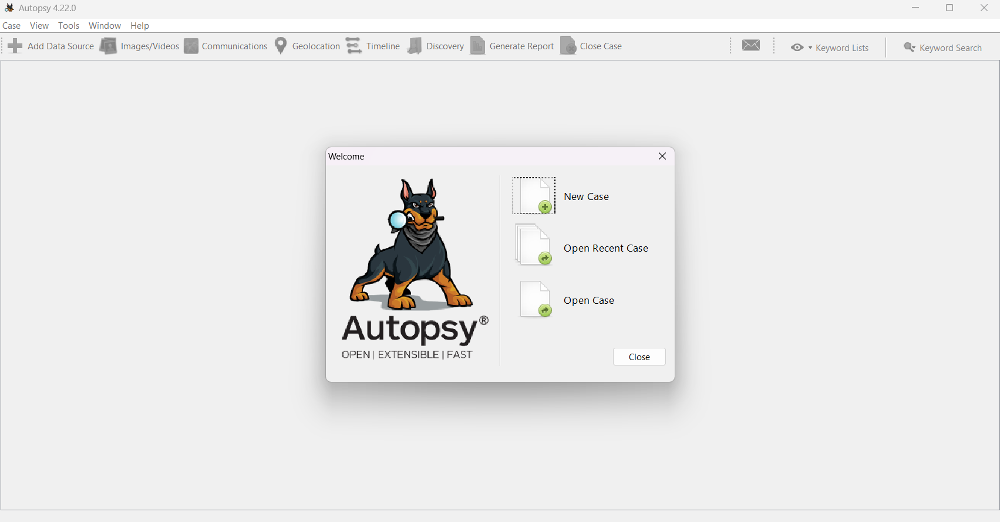
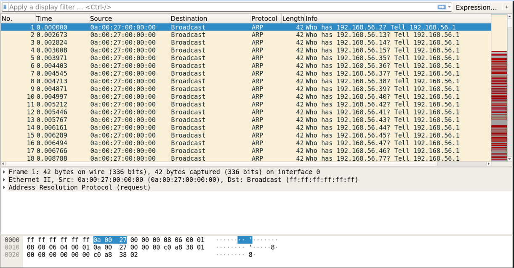
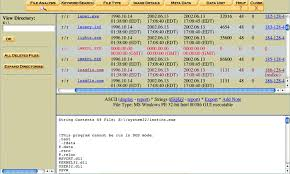
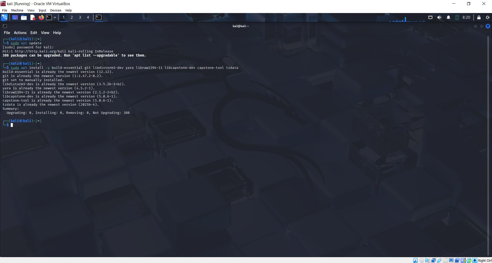

Create/acquire disk image, load into Autopsy, recover 5 files and 2 deleted files.
Investigation Workspace
Computer Forensics Investigation Dashboard
Collect evidence, track every practical task, and present your findings professionally.
Track progress, open folders quickly, and keep all task resources in one place.
Completion Progress
0%
Analyze traffic with filters (`http`, `dns`, `ip.addr`) and identify suspicious activity.
Run basic, service-detection, and aggressive scans; report open ports/services/vulns.
Do file system analysis, timeline, keywords (`password`, `bank`), and suspicious files.
Analyze mobile/cloud logs for login attempts and suspicious behavior evidence.
Use memory dump analysis to identify running/suspicious processes and indicators.
Compile tools, screenshots, findings, attack summary, and final recommendations.
Record a professional Zoom explanation (camera on, under 25 minutes).
Task Resources
Expand each task to view links, objective, and notes.
Task 1 Details
Title: Using Autopsy to retrieve deleted files
Aim: Use Autopsy to recover and analyze deleted files from a disk image.
Direct Links
Workflow
- Create a new case in Autopsy.
- Add the disk image or local disk as a data source.
- Run ingest and wait for processing to complete.
- Open File Views -> Deleted Files.
- Locate target deleted files and extract them.
- Store extracted files in your evidence output folder.
Checklist
Task 1 Screenshots



Task 2 Details
Title: Wireshark Challenge
Aim: Analyze packet captures and identify network events/artifacts.
Direct Links
Task 2 Screenshots


http.

dns.

ip.addr == 8.8.8.8.


Task 3 Details
Title: Penetration Testing Lab - Nmap
Aim: Run Nmap scans and document open ports, services, and host information.
Direct Links
Preview

Task 4 Details
Title: File System Forensics with Autopsy and Sleuth Kit
Aim: Investigate file system artifacts using Autopsy and Sleuth Kit workflows.
Direct Links
Task 4 Screenshots


Task 5 Details
Title: Mobile Cloud Logs
Aim: Collect and analyze mobile/cloud log artifacts for forensic findings.
Direct Links
Task 5 Screenshots
No images in Task 5 folder yet. Add screenshots to display them here.
Task 6 Details
Title: Memory Forensics using Volatility3
Aim: Analyze memory images to identify malware traces and suspicious processes.
Direct Links
Task 6 Screenshots

Task 7 Details
Title: Final Report
Aim: Consolidate results from all tasks into one final forensic report.
Direct Links
Video Presentation
Aim: Prepare and store your recorded presentation and supporting materials.